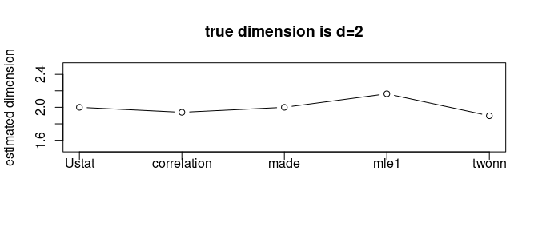

Rdimtools is an R package for dimension reduction (DR) - including feature selection and manifold learning - and intrinsic dimension estimation (IDE) methods. We aim at building one of the most comprehensive toolbox available online, where current version delivers 145 DR algorithms and 17 IDE methods.
The philosophy is simple, the more we have at hands, the better we can play.
Elephant
Our logo characterizes the foundational nature of multivariate data analysis; we may be blind people wrangling the data to see an elephant to grasp an idea of what the data looks like with partial information from each algorithm.
Installation
You can install a release version from CRAN:
install.packages("Rdimtools")or the development version from github:
## install.packages("devtools")
devtools::install_github("kisungyou/Rdimtools")Minimal Example : Dimension Reduction
Here is an example of dimension reduction on the famous iris dataset. Principal Component Analysis (do.pca), Laplacian Score (do.lscore), and Diffusion Maps (do.dm) are compared, each from a family of algorithms for linear reduction, feature extraction, and nonlinear reduction.
# load the library
library(Rdimtools)
# load the data
X = as.matrix(iris[,1:4])
lab = as.factor(iris[,5])
# run 3 algorithms mentioned above
mypca = do.pca(X, ndim=2)
mylap = do.lscore(X, ndim=2)
mydfm = do.dm(X, ndim=2, bandwidth=10)
# visualize
par(mfrow=c(1,3))
plot(mypca$Y, pch=19, col=lab, xlab="axis 1", ylab="axis 2", main="PCA")
plot(mylap$Y, pch=19, col=lab, xlab="axis 1", ylab="axis 2", main="Laplacian Score")
plot(mydfm$Y, pch=19, col=lab, xlab="axis 1", ylab="axis 2", main="Diffusion Maps")Minimal Example : Dimension Estimation

Swill Roll is a classic example of 2-dimensional manifold embedded in ℝ3 and one of 11 famous model-based samples from aux.gensamples() function. Given the ground truth that d = 2, let’s apply several methods for intrinsic dimension estimation.
# generate sample data
set.seed(100)
roll = aux.gensamples(dname="swiss")
# we will compare 6 methods (out of 17 methods from version 1.0.0)
vecd = rep(0,5)
vecd[1] = est.Ustat(roll)$estdim # convergence rate of U-statistic on manifold
vecd[2] = est.correlation(roll)$estdim # correlation dimension
vecd[3] = est.made(roll)$estdim # manifold-adaptive dimension estimation
vecd[4] = est.mle1(roll)$estdim # MLE with Poisson process
vecd[5] = est.twonn(roll)$estdim # minimal neighborhood information
# let's visualize
plot(1:5, vecd, type="b", ylim=c(1.5,2.5),
main="true dimension is d=2",
xaxt="n",xlab="",ylab="estimated dimension")
xtick = seq(1,5,by=1)
axis(side=1, at=xtick, labels = FALSE)
text(x=xtick, par("usr")[3],
labels = c("Ustat","correlation","made","mle1","twonn"), pos=1, xpd = TRUE)
We can observe that all 5 methods we tested estimated the intrinsic dimension around d = 2. It should be noted that the estimated dimension may not be integer-valued due to characteristics of each method.
Acknowledgements
The logo icon is made by Freepik from www.flaticon.com.The rotating Swiss Roll image is taken from Dinoj Surendran’s website.